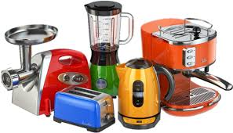
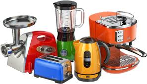

DESCRIPCIÓN DE LOS ARTICULOS

 

Inicio
Productos
Sitio de internet
Buscador de imagen
Buscador Google
TIENDA DE ELECTRODOMESTICOS
LINEA BLANCA
Se refiere a los principales electrodomésticos vinculados a la cocina y limpieza del hogar. En el comercio afiliado es donde más electrodomésticos son adquiridos con un 48 % sobre el total del mercado, seguido de las grandes superficies los especializados con un apoyo de son las 25 % sobre el total. Incluye:
Cocina
horno/microondas
lavadora/lavarropas
lavaplatos/lavavajillas
refrigerador/nevera/heladera y congelador
campana extractora
secadora/secarropas
termo eléctrico de agua caliente/termotanque/bóiler
calefactor
aire acondicionado
Los grandes electrodomésticos pueden ser divididos, en grandes rasgos, en equipos de refrigeración, climatización, equipamiento de lavado y mixtos.
EL PORQUE CREAR TIENDAS ONLINE
Internet ha puesto todo a nuestro alcance, desde comprar la comida de tu perro hasta comprar un carro.
Y ahora está evolucionando para convertirse en un foro donde probablemente todos hemos evaluado alguna vez algún producto o servicio, las famosas reseñas.